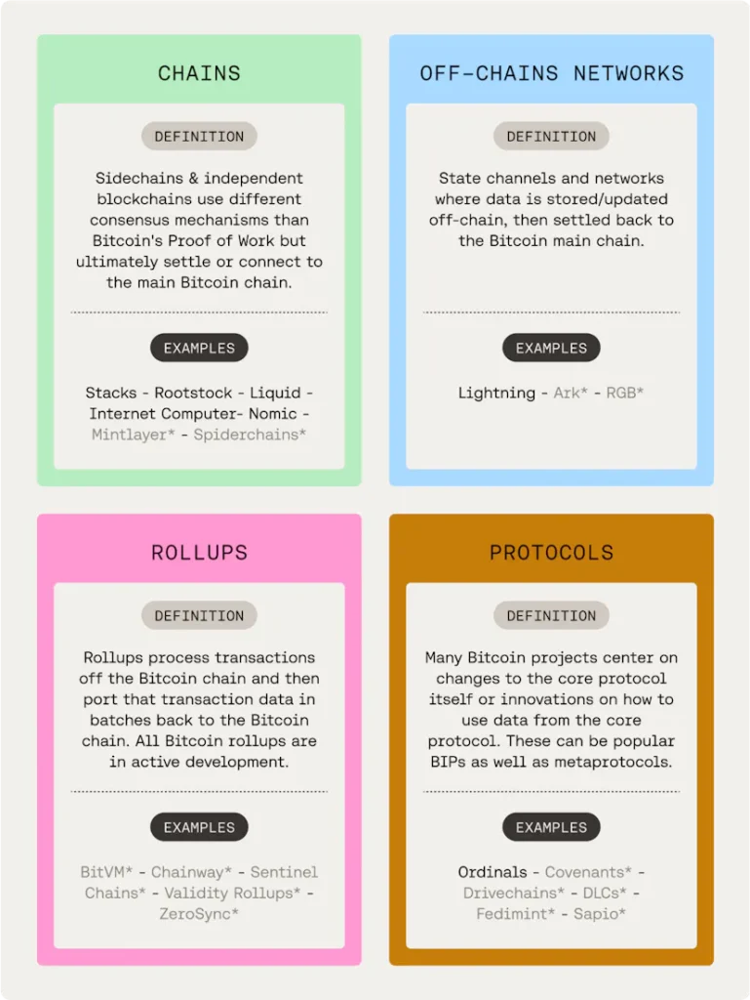
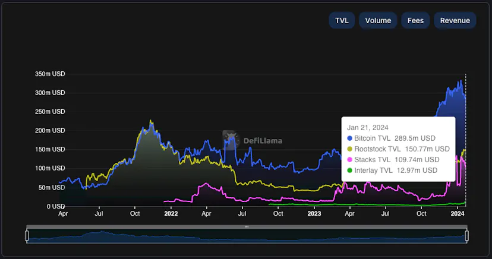
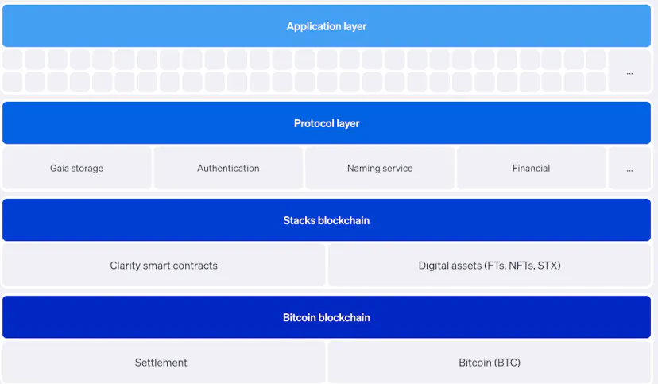
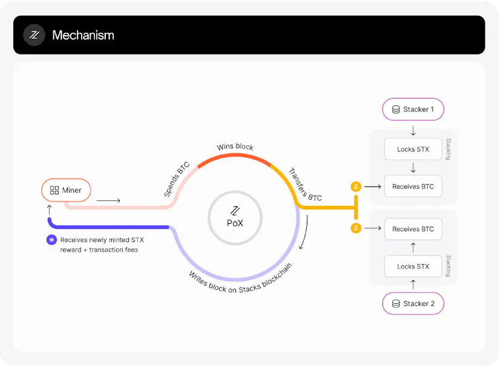

Explore how Stacks, Rootstock and Interlay are revolutionising DeFi on Bitcoin: transforming blockchain technology and driving the future of decentralised finance.
Intro
BTC is arguably crypto's most pristine collateral but most of its $800B+ market capitalisation(cap) is yet to be unlocked for use cases like lending and borrowing in a trustless manner.
Decentralised Finance (DeFi) on Bitcoin is poised to be a huge unlock as it will allow holders to get liquidity without necessarily selling their BTC, which would result in less downward pressure over time. Currently, lending BTC is mostly reserved for hedge funds, VCs, and institutional borrowers and takes place on centralised platforms mostly. Coinbase attempted using BTC for lending and borrowing in 2021 with the launch of its 'Bitcoin Borrow' lending program; however, it was shut down due to regulatory pressure. But there are more companies being funded to bring Bitcoin-backed loans to the masses.
This blog post delves into the technical advancements made by teams like Stacks, Lightning and Roostock and explores how they are working to scale Bitcoin's robust network.
The Evolution of DeFi on Bitcoin
BTC lending proved very appealing for retail investors during the past bull market, with Centralised Finance (CeFi) platforms such as Celsius and BlockFi allowing users to generate yield on their BTC deposits or take loans against it. Unfortunately, most CeFi platforms ended up collapsing with its users losing all or part of their deposits. Simultaneously, users willing to use alternative versions of BTC, initially on Ethereum and later other networks, were able to do so via wrapping BTC. This most popular version of wrapped BTC, wBTC, is an ERC-20 token that can be used in DeFi applications, currently capturing almost 1% of BTC's circulating supply. This indicates a clear pent-up user demand to deploy and utilise Bitcoin that the Bitcoin ecosystem cannot provide today.
However, these alternative BTC-like tokens have a greater degree of counterparty risk, which discourages the typical Bitcoin investor. Until now, the potential for hosting complex DeFi applications on Bitcoin remained untapped. This was mainly due to the limitations related to Bitcoin's basic scripting functionality, which is limited to setting conditions for spending transactions only. Further Bitcoin's scripting lacks automated code execution and smart contracts capabilities.
Teams building on Bitcoin, ranging from Bitcoin layers to improvements and innovations on the Bitcoin blockchain directly, can grouped in the following 4 categories:

The Bitcoin Taproot upgrade enabled some popular use cases such as Ordinals and BRC-20s. However, only teams such as Stacks, Lightning and Roostock have managed to innovate through increased programmability, enabling smart contracts and/or fostering other use cases on the Bitcoin network.
Despite the recent innovations, most users still simply "hodl" their Bitcoin. Approximately $600M (0.08% of the total market cap) is locked into the four major projects building on Bitcoin:

Stacks, Rootstock and Interaly can be considered Bitcoin L2 chains. Additionally, projects generating Bitcoin TVL include Lightning Network (payments), Thorchain (cross-chain DEX) and ICP's ckBTC (a token backed 1:1 with BTC), among others.
Stacks: Pioneering Bitcoin’s Programmability
Stacks, a prominent pioneer in this field, introduced Clarity, an expressive smart contract language that enables the development of decentralised applications that benefit from the underlying security and immutability of the Bitcoin network. Their approach involves an innovative layer that operates atop Bitcoin, bringing programmability to a previously static environment.

Stacks operates the PoX (Proof of Transfer) consensus mechanism, wherein miners transfer Bitcoin to earn the right to mine new blocks. Simultaneously Stackers lock their STX tokens to support the network and earn BTC rewards.

Stacks upcoming Nakamoto Upgrade, will enable ~5 seconds transaction times, L2 transactions with Bitcoin finality and will be the precursor for the introduction of sBTC.
sBTC will be a non-custodial, programmable 1:1 BTC-backed asset that will enable trust-minimised movement of BTC in/out of Bitcoin layers.
Multiple projects are currently building on Stacks, and we encourage you to check out Stack's roadmap.
Thorchain, Interlay and Roostock: Expanding Bitcoin’s Utility in Finance
Thorchain and Interlay have taken a different route, focusing on financial services and products based on Bitcoin. Thorchain is the leading cross-chain DEX enabling swaps of BTC for tokens in other chains.
Interlay, which runs as one of Polkadot's parachains, introduced iBTC, a token pegged 1:1 to Bitcoin. iBTC allows users to swap, borrow and lend, and will soon launch a BTC staking service.
The Roostock Network is an EVM compatible smart contract network, secured by over 50% of Bitcoin hashing power through the process of merged mining. Additionally, it uses "Smart BTC" (RBTC) as its native coin which allows users to convert BTC to RBTC and back again using Rootstock's 1:1 built-in two-way peg protocol.
These projects enable traditional DeFi products and real-world applications, unlocking BTC potential and levelling it up with the traditional DeFi sector.
The Impact and Future Potential
The integration of BTC on DeFi is more than just a technical feat; it represents a significant shift in the blockchain landscape. By utilising the most secure and valuable blockchain, Bitcoin, for DeFi, these innovations promise greater stability and trust in decentralised financial services. The recent approval of the BTC ETFs will significantly impact the DeFi space on Bitcoin. With increased investment and interest in Bitcoin, the efforts of teams like Stacks, Thorchain, Interlay, and Axiom Chain in integrating DeFi solutions on the Bitcoin network become even more pertinent. As investment and developer interest in Bitcoin grows, so too does the potential for innovative DeFi applications that leverage Bitcoin's security and liquidity.
Axiom Chain: At the Forefront of Blockchain Innovation
At Axiom Chain, we are tracking the evolution of DeFi on Bitcoin closely. Our team of expert blockchain developers and strategists continuously explore new ways to contribute to this burgeoning sector. We believe that the advancements in Bitcoin-based DeFi protocols will open up new opportunities for investors, developers, and end-users alike, creating a more inclusive and efficient financial ecosystem.
Conclusion
As we witness the rapid growth of DeFi on Bitcoin, the potential for innovation and financial empowerment is immense. We encourage our readers to stay informed and engaged with these developments, paving the way for a more decentralised and equitable financial future.
Contact Axiom Chain to explore more about blockchain development and how it's shaping our world. The journey of DeFi on Bitcoin, championed by teams like Stacks, Thorchain, Interlay, and Axiom Chain, is just beginning. Their pioneering work exemplifies the endless possibilities of blockchain technology, marking a new chapter in the DeFi narrative.